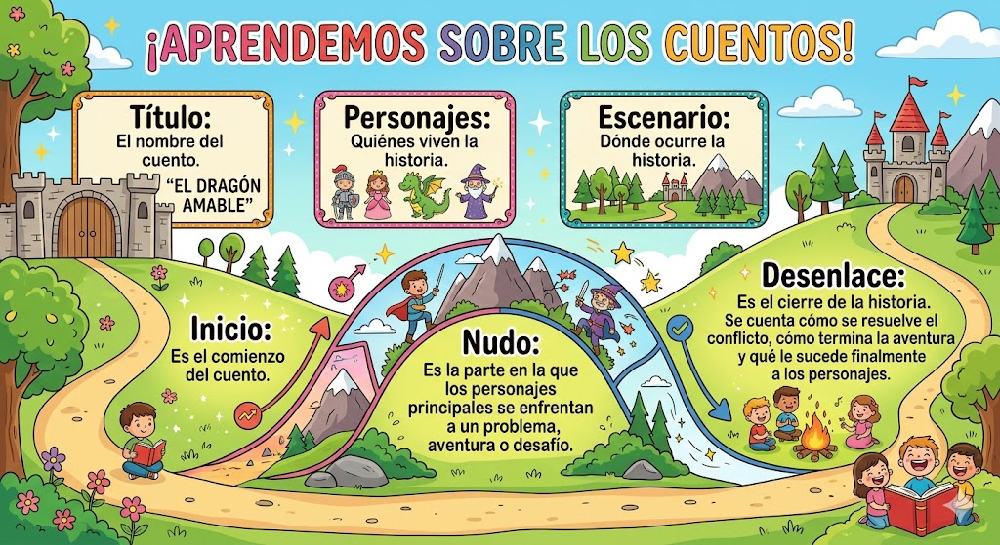

PRIMERA SESIÓN: VEMOS UN CUENTO DIGITAL HECHO CON CANVA
Escuchamos un cuento digital en clase. Después, hablamos sobre los personajes, los lugares y lo que más nos ha gustado. Además, realizaremos una primera toma de contacto con Canva para conocer sus herramientas básicas.
Cuento digital Sophie y su mascota viajan para salvar el planeta.
Referencia en APA: IA para educadores. (s. f.). Crea un Video Cuento con personajes consistentes en Canva [Video]. YouTube. https://www.youtube.com/watch?v=4iHwGP-he_Q
SEGUNDA SESIÓN: PENSAMOS NUESTRO CUENTO
Inventa un cuento que tenga los elementos vistos en el padlet:

Gemini. (2026). Infografía generada por IA. Google Gemini. https://gemini.google.com/TERCERA SESIÓN: CREAMOS NUESTRO CUENTO EN CANVA
En clase diseñaremos nuestro cuento digital en canva añadiendo dibujos, fondos, texto y movimientos para que quede bonito y divertido.
“¡Preparamos nuestra mirada de exploradores, porque este videotutorial nos guiará paso a paso en esta aventura!”
Referencia en APA: IA para educadores. (s. f.). Crea un Video Cuento con personajes consistentes en Canva [Video]. YouTube. https://www.youtube.com/watch?v=4iHwGP-he_Q
CUARTA SESIÓN: GRABAMOS NUESTRO CUENTO
Grabamos nuestro cuento leyendo con calma, pronunciando con claridad y con buen volumen.
“¡Lo vais a hacer estupendamente, con esfuerzo y ganas os saldrá un cuento increíble!”
QUINTA SESIÓN: PRESENTAMOS EL CUENTO EN CLASE
Enseña tu cuento digital a tus compañeros y compañeras en clase, mostrando las diferentes partes de la historia y explicando brevemente de qué trata, quiénes son los personajes y qué ocurre en cada momento.
Antes de empezar, recuerda practicar tu presentación para sentirte más seguro de lo que vas a contar. Habla despacio, con una voz clara y mira a tus compañeros y compañeras para que te puedan entender bien.
“¡Confía en ti, porque tienes una gran historia que contar y lo vas a hacer genial!”
SEXTA SESIÓN: REFLEXIONAMOS SOBRE NUESTRO APRENDIZAJE
Completa este cuestionario de autoevaluación sobre qué hemos aprendido durante la creación del cuento de cuento digital en canva.